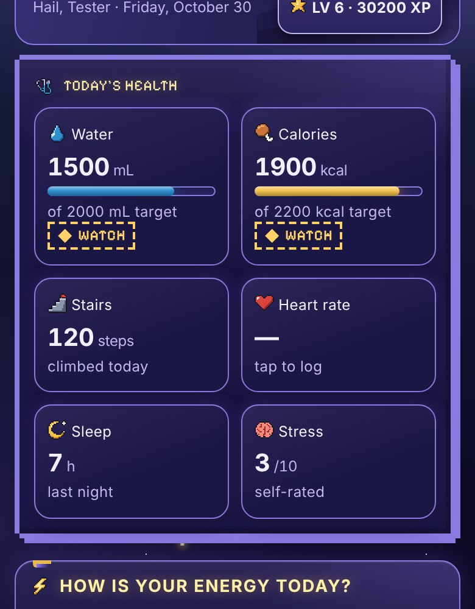
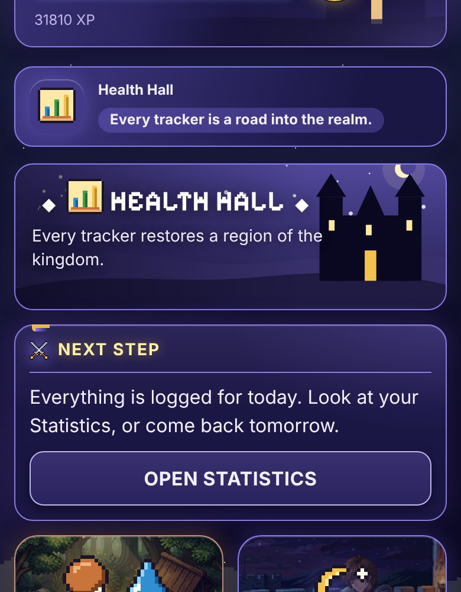
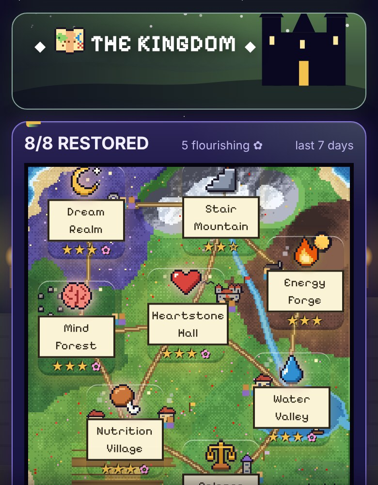
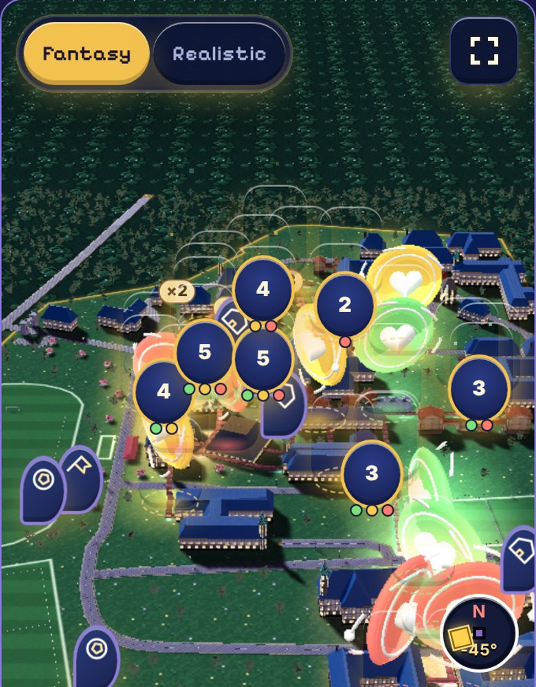
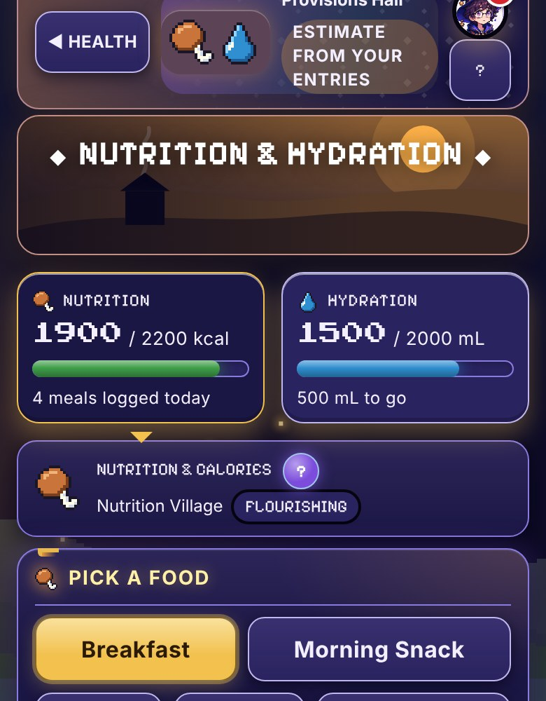
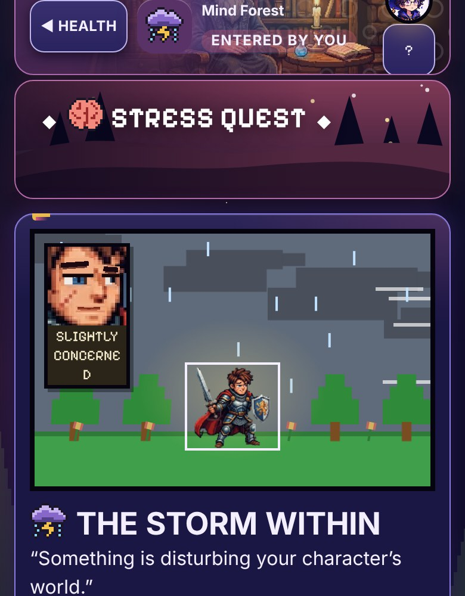
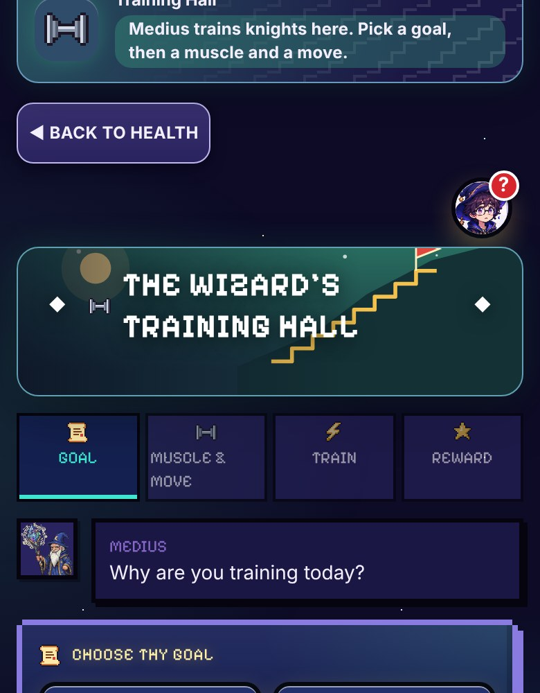
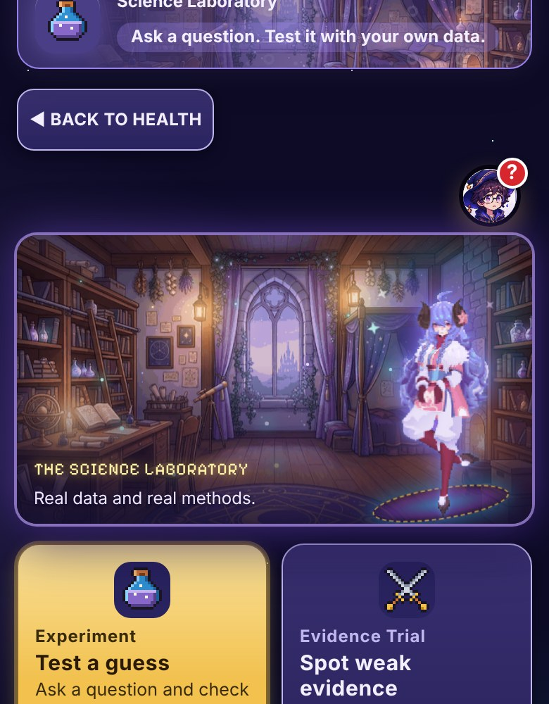

SEE IT RUNNING
Real screens from the live app










Screens are demo data. Captured from the running app on a phone-sized screen with 30 days of sample entries. The numbers are samples, not real health measurements.
Try it: healthwizkingom.github.io/Healthwiz-Kingdom · Wellness tracker, not a medical device. GROUP 14 · KOLEJ MARA KULIM
RAYYAN RAFIQIN · QAYYUM · NAUFAL
AMIR · MUI’ZZUDDIN · MUIZ ZIKRI
Try it: healthwizkingom.github.io/Healthwiz-Kingdom · Wellness tracker, not a medical device. GROUP 14 · KOLEJ MARA KULIM
RAYYAN RAFIQIN · QAYYUM · NAUFAL
AMIR · MUI’ZZUDDIN · MUIZ ZIKRI